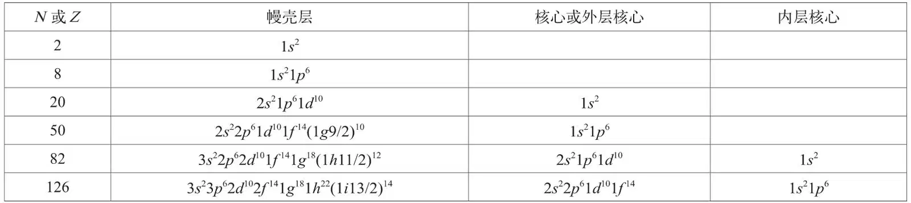
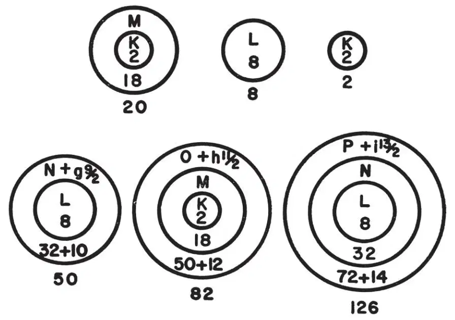

英文
英文鲍林
编者按
在20世纪60年代中期，物理学家注意到，那些出奇稳定的原子核都含有一些特定“幻数”的质子或中子，这些“幻数”包括2、8、20、50、82和126。本文中，美国化学家莱纳斯·鲍林提出了一种解释：他认为这些幻数并不对应于那些完全被费米子（自旋为1/2的粒子，例如质子和中子）填满的原子壳层。而是看起来对应于在空间中被有效堆积的核子的闭壳层，可能还带有一圈外加的α粒子晕。例如，幻数50就意味着在闭壳层核心内有8个中子或质子，另外42个在外层晕中。与其他原子核相比，这些幻数核具有更高的平均结合能。 英文
艾尔萨瑟[1]于1933年指出，较之于其他数，具有某些特定中子数和质子数（将其命名为幻数）的原子核的一些性质更为稳定。对于N（中子数）和Z（质子数），这些幻数是2、8、20、50、82和126。（对于N或Z等于6、14、28、40以及某些更大的数，也能注意到不太明显的效应。通常认为幻数序列包括28。） 英文
幻数既不是与费米子满壳层（或者说费米子成对填满主量子数为n、角量子数为l ≤ n – 1的所有状态）有关的数值（2n2），即2、8、18、32、50……也不是与某些可导致电子在原子中有最大稳定性的壳层和子壳层有关的数值：2、10、18、36、54和86。 英文
梅耶夫人[2]以及哈克塞尔、延森和苏斯[3]都发现，幻数可以利用对应于独立核子的自旋–轨道耦合的支壳层来进行解释；也就是说，对应于某一子壳层的总角动量分别为j = l + 1/2和l – 1/2的两个支壳层。例如，他们[4]将N或Z为50的组态标记为(1s1/2)2 (1p3/2)4 (1p1/2)2 (1d5/2)6 (2s1/2)2 (1d3/2)4 (1f7/2)8 (2p3/2)4 (1f5/2)6 (2p1/2)2 (1g9/2)10，或更简略地写成1s2 1p6 1d10 2s2 2p6 1f14 (1g9/2)10。 英文
有关自旋–轨道耦合和梅耶夫人–延森壳层模型的证据是令人信服的。然而，对于他们的论据，让人难以理解的是，为什么这6个幻数在可以填满自旋–轨道耦合的支壳层的数字集合中是如此与众不同，这个集合（对于能级的梅耶夫人–延森序列[4]）是2、6、8、14、16、20、28、32、38、40、50、56、64、68、70、82、92、100、106、110、112、126、136、142…… 英文
在构建基于核子集团最密堆积假设的核结构理论[5]的过程中，我已发现，幻数具有非常简单的结构意义：2和8对应于闭壳层组态1s2和1s21p6，而其他的则对应于带有一个外层（称为核的幔壳层）的闭壳层核，其中外层内含有一定数量的球子（氦核[6]、He[4]、氚核、H[3]或双中子），这些球子以堆积的方式围绕在核心周围。 英文
例如，在金属间化合物[7]Mg32(Al,Zn)49中发现的（二十面体的）三角形最密堆积各外层中包含的球子数按顺序依次为1、12、32、72。这些数可用方程 近似表示，其中n0是在一个外（壳）层中球子的数目，ni是核中球子的数目。（这个方程的形式相当于为球子赋予等量的有效体积，常数值反映了表面的小块和外部球子的堆积进入了核心的内部。）这个方程可用来计算核内相继外层中球子的数目，进而获得核子能级的序列数。子壳层（具有特定的角量子数l）一旦出现（如组态1s1p等）就分配给球子的幔壳层，那些出现二次的（如1s和2s）就分配给幔壳层和下一个内层，等等。因此，对于上述给定的N或Z = 50的组态，我的解释是：在核心(1s21p6)中有8个中子或质子，另外42个中子或质子在外层(2s22p61d101f14(1g9/2)10)里。 英文
近似表示，其中n0是在一个外（壳）层中球子的数目，ni是核中球子的数目。（这个方程的形式相当于为球子赋予等量的有效体积，常数值反映了表面的小块和外部球子的堆积进入了核心的内部。）这个方程可用来计算核内相继外层中球子的数目，进而获得核子能级的序列数。子壳层（具有特定的角量子数l）一旦出现（如组态1s1p等）就分配给球子的幔壳层，那些出现二次的（如1s和2s）就分配给幔壳层和下一个内层，等等。因此，对于上述给定的N或Z = 50的组态，我的解释是：在核心(1s21p6)中有8个中子或质子，另外42个中子或质子在外层(2s22p61d101f14(1g9/2)10)里。 英文
堆积方程的应用基本上导出了梅耶夫人和延森给出的能级序列，但通常是在N或Z值有重叠的范围内填满不同外层的支壳层。例如，支壳层3s1/2，2d3/2和1h11/2都在N或Z约为60时开始填充，直到N或Z约为82时才都被填满。 英文
在表1和图1中分别给出了将这种方法应用于幻数后得到的组态。前两个幻数都表示满壳层，第三个幻数（20）则有一个满壳层作为核心和另一个作为幔壳层。其他每一个幻数都包含一个或两个满壳层作为核心，至于它们的幔壳层，在幻数是50的情况下，堆积要求其包含组态为(1g9/2)10的支壳层，在幻数为82的状态下，包含(1h11/2)12的支壳层，而幻数126则包含(1i13/2)14的支壳层，一直至幻数184，不存在N或Z的其他数值，由堆积方程导出的仅包含满壳层的核。 英文
表1. 对于各种幻数的核子组态


图1．原子核的幻数结构 英文
我的结论是，幻数所体现的稳定性来自由球子组成的单层（2、8）或者双层（20）满壳层，或者对于更大的幻数（50、82、126）和具有核心的层，则幔壳层是由一个满壳层加上一个填满的支壳层构成。 英文
（沈乃澂 翻译；厉光烈 审稿）